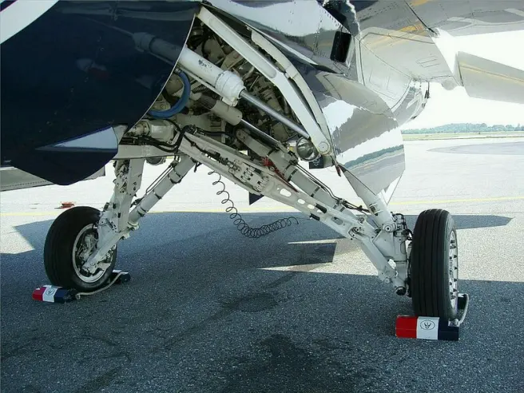
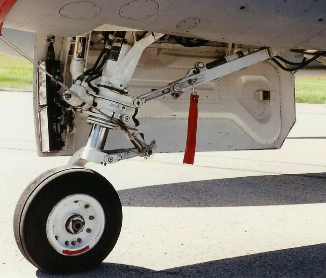
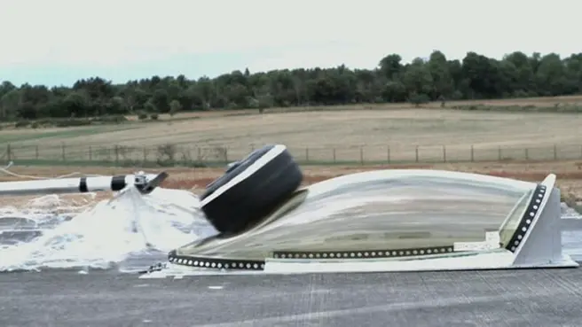
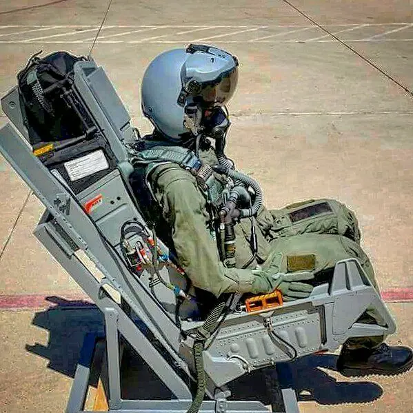
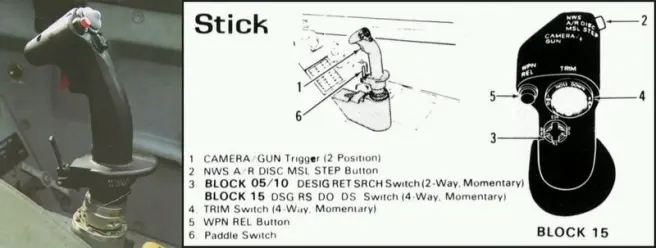
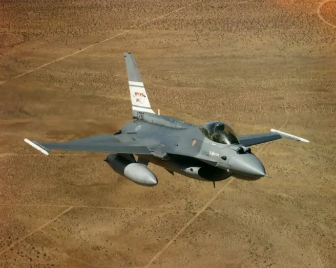
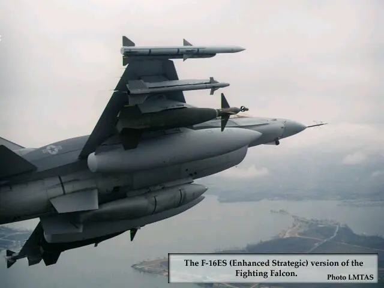
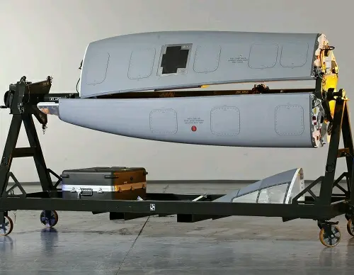
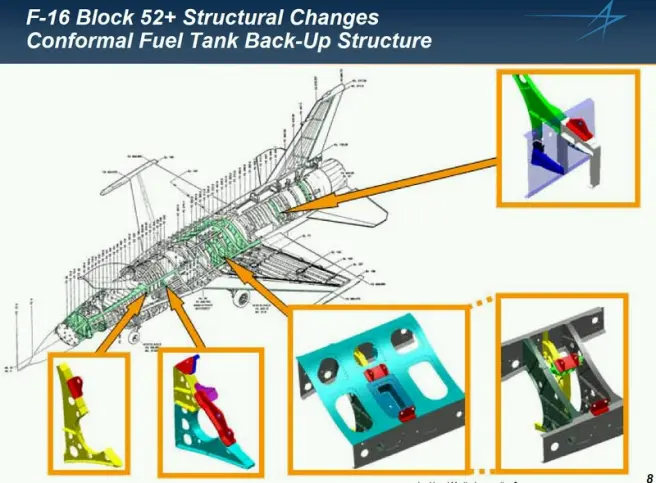

“蝰蛇”的秘密，透视F-16“战隼”战斗机（下）
发布时间：2019-06-04
原作者：Armstrong
原地址：空军之翼
起落架
由于F-16的机翼很薄无法容纳起落架组件，所以主起落架舱被布置在机腹。F-16的主起落架采用四连杆机构，由主撑杆、斜撑杆、油气减震器、动作筒组成。主起落架在放下姿态时呈三角架状态，收起位置时机轮向前，收纳入主起落架支承接头连接框前面的起落架舱内。在收起过程中，机轮绕起落架支柱旋转一定角度，使机轮平贴在舱内，所有主承力杆也都折叠在同一平面内，达到规则地占有最小空间这一目的。

前起落架舱就布置在进气口下方，起落架向后收的同时机轮旋转90度平躺在起落架舱中。

座舱盖
F-16A/C的座舱为单人空调座舱，F-16B/D为串列式双座舱。F-16采用了无风挡无隔框的气泡式座舱盖，使F-16飞行员有着其它战斗机无法比拟的全向视野。座舱盖使用单块聚碳酸酯材料制造，可使驾驶员的上半球视野达360度，一侧至另一侧为260度，前后为195度，侧下方为40度，前下方为15度。
座舱盖的光学性能很好，曲面具有最小的光学畸变。座舱盖的玻璃厚度为1.27厘米，可抵御1.8千克的鸟类648.2千米/时（350节）速度的撞击。即使大型鸟类撞破了座舱盖，坚固的HUD也能起到保护飞行员的作用。传统风挡的取消意味着整体座舱盖玻璃的厚度都要与前部抵御鸟撞的区域相同，这大大增加了重量。整体座舱盖的另一个缺点就是飞行员弹射时必须先抛盖，因为对于穿盖弹射来说玻璃太厚了。

座舱盖内侧覆盖有金色镀膜以消散雷达波能量，降低雷达截面积（特别是前向）。冗余安全锁能防止座舱盖被误开。座舱盖通常电动马达开闭，但也有手动曲柄作为备份。对金色座舱盖内侧的金属膜有几种说法，一是镀了一层美国PPG工业公司的氧化铟锡膜，厚度为400Å；二是在座舱内侧直接用蒸镀法镀上一层金；三是贴上一层金属膜。第一种说法比较可信。这层镀膜对1GHz范围内的雷达波有效，使雷达波在进入座舱前就散射掉。由于金属的屏蔽作用，还可以保护座舱内的航空电子设备免受电磁干扰。
弹射座椅
F-16采用麦道的先进概念弹射座椅（ACE II），这种火箭动力的弹射座椅安装有矢量推力俯仰控制系统，可零-零弹射，最高弹射高度15240米，最大弹射速度1111.2千米/时。座椅后倾30度，并提高脚蹬位置，可使飞行员在短时间的抗过载能力达到8-9g。但座椅的30度后倾角是否实用至今仍存在争议，由于头部缺乏支撑，F-16飞行员的颈椎病发病率较高，且在高g机动中飞行员很难转动头部来检查尾部空情。甚至有人开玩笑说，F-16已经设计好了才发现弹射座椅的导引架太长了，最简单的调整就是将座椅后倾30度，这样不用做大幅度的机身结构修改。

操纵杆
座舱内传统的中置操纵杆被安装在右侧控制台上的侧置操纵杆所取代，左撇子飞行员使用起来也毫无困难。首架YF-16安装的是固定式测力操纵杆，通过测量飞行员施加的力量来判断所需的俯仰和滚转速率。生产型F-16的操纵杆增加了少许人工“感觉”，可向后移动4.76毫米，左右各2.38毫米。由于在负g状态下的飞行员往往会大力推杆，所以侧杆仅可向前移动0.25毫米。

双座型两个座舱内装有全套操纵装置、显示装置、仪表、电子设备及救生系统，可供训练及作战使用。后座布置与前座基本相同，具有所有的系统操纵功能。
飞控
F-16在总体布局上采用了随控布局中的“放宽静稳定度”技术。与常规布局相比，机翼向前移动了40.6厘米，从而使气动力中心前移，在速度为M0.9时静稳定度略为负值，而在速度为1.2马赫时为8%。
YF-16是世界上第一架在设计上采取空气动力学不稳定的飞机，重心位于全机空气动力中心的后方，在飞行时会有机头向上的倾向，而不是如大部分传统飞机一样向下。水平飞行时需要由平尾上偏而非下偏，因此平尾产生的是正升力。由于平尾与机翼都是产生正向升力，机翼面积、重量、以及阻力也就减少。飞机时刻是保持在俯仰轴失控的边缘，这种倾向会被线传飞控系统检查并校正，校正的频率快到飞行员或外部观察者无法感知到。
F-16A/B安装了全 线传（FBW）飞控系统，取代了传统的带有连接机构和管线的液压机械装置。该系统为四通道模拟系统，由于F-16的研制年代较早，所以A/B型没有安装航天飞机和F/A-18“大黄蜂”采用的四余度数字系统。FBW系统使F-16的重心在升力中心之后也能安全飞行，这就是先天的静不稳定性，使飞机具有高度敏感的操纵响应，并在高g机动中具有较小的平尾偏转量。放宽静稳定度可以允许采用较小的平尾，因为改变飞机姿态所需的控制力较小。F-16第一种敢于取消机械备份，完全相信全电FBW系统的机型。
在AFTI/F-16的三余度数字系统试验成功后，通用动力有了信心来淘汰早期“战隼”上使用的模拟式FBW系统，从Block 25开始采用了四余度数字式FBW系统。

油箱
F-16机身内部共有7个油箱，分别是2个前机身油箱、1个后机身油箱、2个左右机翼油箱、1个前机身蓄油油箱、1个后机身蓄油油箱。F-16A/C单座型内油容量3974升，F-16B/D双座型内油3194升，F-16在满内油的状态下仍可做9g机动。此外F-16的机翼内侧挂架和机腹挂架都可以挂载副油箱，其中机翼副油箱分为两种，一种是1400升（370加仑）副油箱，一种是2271升（600加仑）副油箱，机腹椭圆形副油箱为1136升（300加仑）。

以色列IMI公司研制的2271升副油箱可使F-16的转场航程增加40%，作战半径增加25%。Block 50/52+及F-16E/F、F-16I可在机背安装一对1703升（450加仑）的保形油箱。保形油箱的设计思想是在保持或不大改变飞机整体流线型（保形）的气动布局的前提下，紧贴机体安装，使油箱与机翼或机身的表面相切，从而减小飞行阻力和雷达反射面积。保形油箱几乎不影响飞机的机动性、操纵性、过载限制和机体设计，而且保形油箱也不影响飞机的日常维护和检修。此外，采用保形油箱还有一个好处，就是可以腾出机翼下面的挂点，使飞机可以携带更多的武器弹药。


F-16的保形油箱可以大幅增加飞机的航程和滞空时间。和原来的Block 30/32 F-16相比，安装保形油箱的Block 52+在操纵品质上毫不逊色，飞行员驾驶其它批次F-16的许多经验对新机仍然适用，在携带保形油箱的情况下仍可做出9g的大过载机动。
F-16在机背安装有硬管式控制加油接口，覆盖有可下陷的铰链式舱盖。F-16发动机启动后，机身内部前后两个小型蓄油油箱通过主燃油阀直接向发动机供油。4个内部油箱分为两组，分别是前/右和左后，两组油箱的燃油系统分别向各自的蓄油油箱供油。机腹副油箱同时向左右机翼油箱供油，机翼副油箱向各自的机翼油箱供油，直到副油箱燃油耗尽。不过在进行空中加油作业期间，副油箱停止向内部油箱供油。
F-16的油箱间主要通过重力和虹吸作用传输燃油，当然也有燃油泵来辅助供油。燃油流量分配器（FFA）用于调整两组油箱的供油量，以避免飞机左右不平衡，以及重心的前后偏移。如果FFA（属于液压系统的一部分）出故障的话，F-16就会因燃油分部不平衡而导致重心失衡。